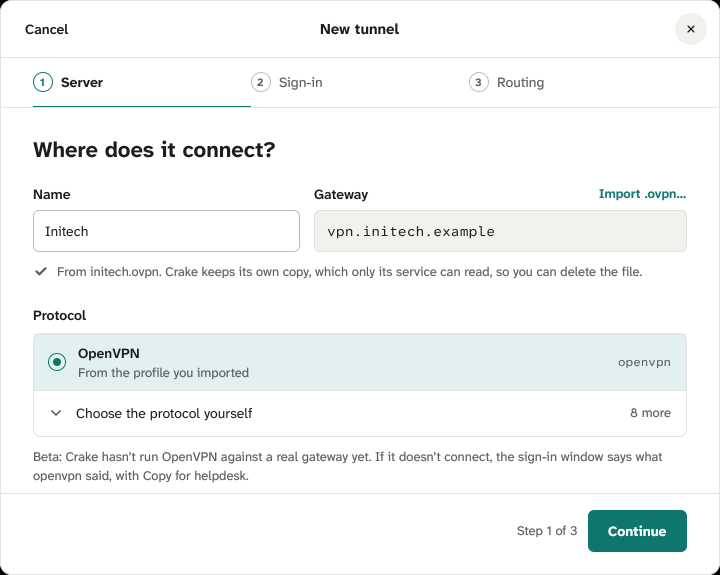
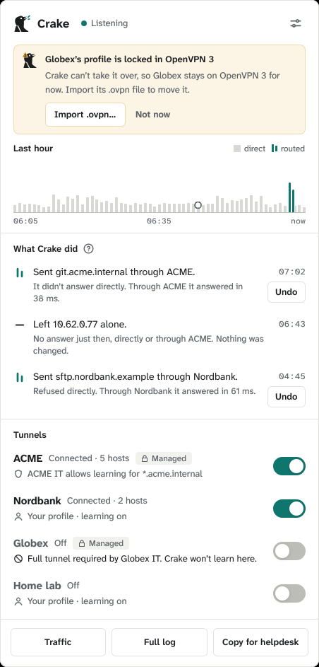
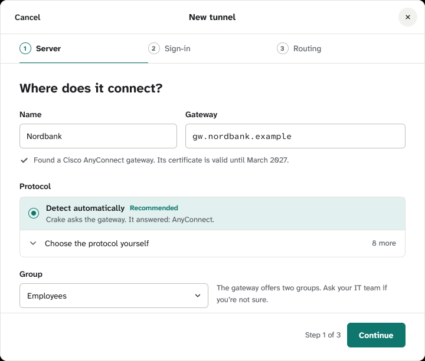
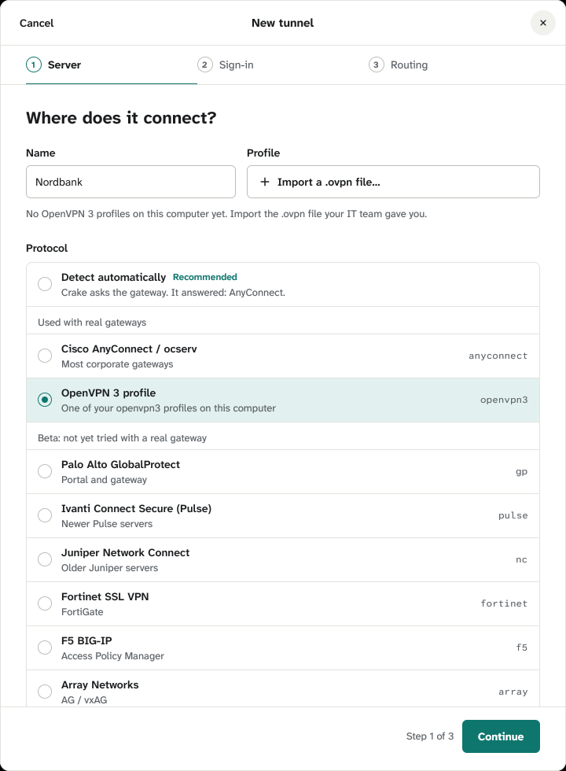

Crake runs OpenVPN profiles itself now, with the openvpn program: on Linux
today, on Windows and macOS next. Decided with you (2026-10-18): importing a .ovpn picks OpenVPN by itself,
and the OpenVPN 3 profiles move to Crake's own OpenVPN. This shows what that looks like. The windows are drawn at
the app's size; “Today” is captured from the app at 1:1. marks what changes; the rest
is as the app has it.
Built (2026-10-18), captured from the app
New tunnel after importing initech.ovpn

The panel, for a profile OpenVPN 3 keeps locked

1 · Starting from a .ovpn file
“Import .ovpn…” sits in the Gateway label's row, where you chose to put the import before
(ovpn-import.html, A). Importing fills in the name from the file, the gateway from the profile, and chooses
OpenVPN. A profile replaced later is imported the same way, from the tunnel's Edit.
Today

After importing initech.ovpn
CancelNew tunnel
1Server
2Sign-in
3Routing
Where does it connect?
Name
Initech
GatewayImport .ovpn…
vpn.initech.example
From initech.ovpn. Crake keeps its own copy, which only its service can read, so you can delete the file.
Protocol
OpenVPNFrom the profile you importedopenvpn
Choose the protocol yourself8 more
Beta: Crake hasn't run OpenVPN against a real gateway yet. If it doesn't connect, the sign-in window says what openvpn said, with Copy for helpdesk.
Step 1 of 3Continue
The gateway is the profile's, so its field can't be typed in (a surface
fill, not an input). No Group row: a profile has none. The Beta line under the list replaces today's, which
says openconnect speaks the protocol (not true of OpenVPN).
2 · Choosing OpenVPN from the list
One “OpenVPN” card replaces “OpenVPN 3 profile”. Its Profile field is today's (a list with
“Import .ovpn…” in the label's row); the list now holds OpenVPN 3's profiles to take over. It sits under Beta
until you've signed in to a real gateway with it.
Today

After (Linux, with OpenVPN 3 profiles: initech chosen)
CancelNew tunnel
1Server
2Sign-in
3Routing
Where does it connect?
Name
Initech
ProfileImport .ovpn…
initech
It connects to vpn.initech.example. Crake takes its own copy; OpenVPN 3 keeps its own.
Protocol
Detect automaticallyRecommendedCrake asks the gateway. It answered: AnyConnect.
Beta: Crake hasn't run OpenVPN against a real gateway yet. If it doesn't connect, the sign-in window says what openvpn said, with Copy for helpdesk.
The list opened: a profile OpenVPN 3 keeps locked says what to do instead
ProfileImport .ovpn…
Choose…
initech
globex · locked: import its .ovpn file
With no OpenVPN 3 profiles (Windows, macOS, Linux without it), the field
is today's “Import a .ovpn file…” button. Copying a profile is done here only: OpenVPN 3 keeps its own, and a
later change there doesn't reach Crake (import it again).
3 · A profile Crake can't take
Said under the field the moment it's chosen, in ink, as today's “Couldn't import…”. Continue
stays off until a profile is taken.
It runs a program or loads a library (refused for good)
Crake won't run initech.ovpn: it loads a plugin (plugin), and Crake runs nothing a profile brings with it.
An option Crake doesn't know yet
Crake can't run initech.ovpn yet: it uses tls-export-cert, which Crake doesn't know.
A file it points to is missing (today's wording)
Couldn't import initech.ovpn: it points to ca.crt, which isn't next to it. Keep the files your IT team sent together and try again.
No openvpn on this computer (the card's “Not installed”, as for openconnect)
Needs openvpn, which isn't installed: sudo apt install openvpn
4 · Step 2: how it signs in
Today's OpenVPN 3 card, saying Crake instead of OpenVPN 3.
How do you sign in?
As the profile saysCrake asks what the profile needs, a password, a code or a sign-in in your browser, when you switch the tunnel on.
5 · Your OpenVPN 3 tunnels move
Once, when this Crake first starts: each OpenVPN 3 tunnel's profile is copied into Crake's own
OpenVPN, and it says so in the log. A tunnel that's on moves when it's next switched on. A profile OpenVPN 3 keeps
locked can't be read: that tunnel stays on OpenVPN 3 and its notice asks for the .ovpn file (the amber notice of
leftover-warning.html, 3: it needs you, nothing has broken yet).
The log window's line, for a profile that moved
Initech now runs on Crake's own OpenVPN.
Its profile was copied from OpenVPN 3, which keeps its own. Your sign-in is asked again the first time. Crake's OpenVPN is Beta: if Initech doesn't connect, its sign-in window says why.
The panel, for a locked one
CrakeNothing through a tunnel right now
Globex's profile is locked in OpenVPN 3
Crake can't take it over, so Globex stays on OpenVPN 3 for now. Import its .ovpn file to move it.
Import .ovpn…Not now
GlobexOff
InitechOff
The notice's icon here is a plain triangle for the proposal; the app
draws the bird's head with the amber triangle, as the leftover notice does.
6 · The sign-in window
Switched on, an OpenVPN tunnel just connects; the window opens only when the gateway asks
something (a kept sign-in asks nothing). The browser state is the approved screen's (sign-in.html), which the
app doesn't show yet: it comes with this. One line is new: after a sign-in the gateway refused, it's asked again,
saying so.
A sign-in page opened (as sign-in.html)
Sign in to Initech
Finish in the browser tab Crake opened. This window updates by itself.